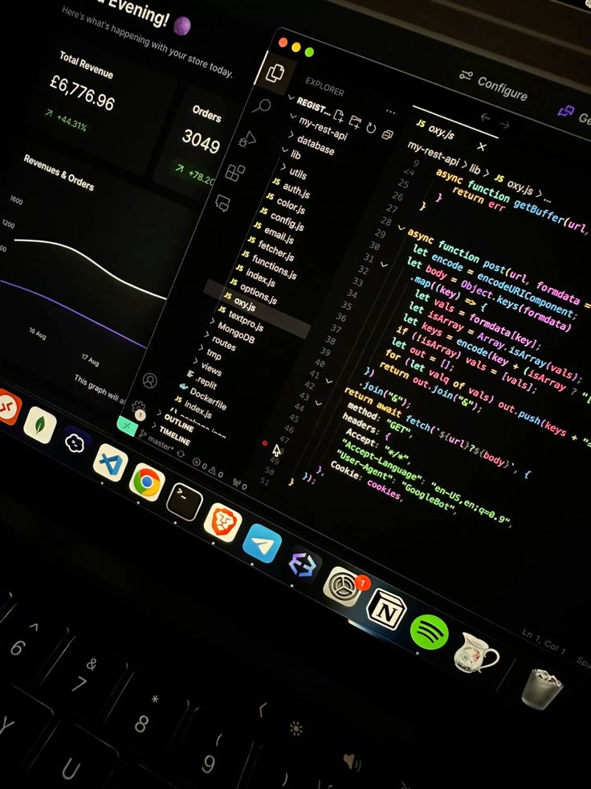
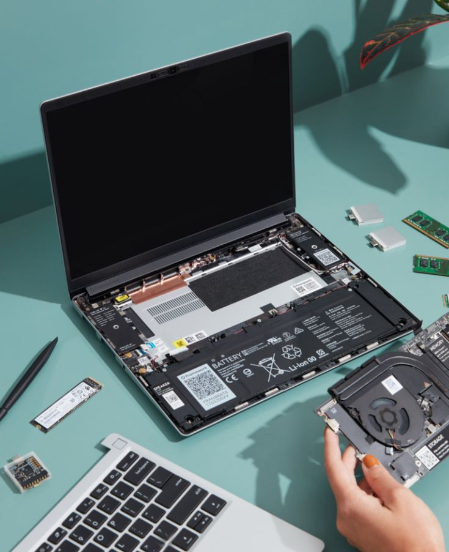
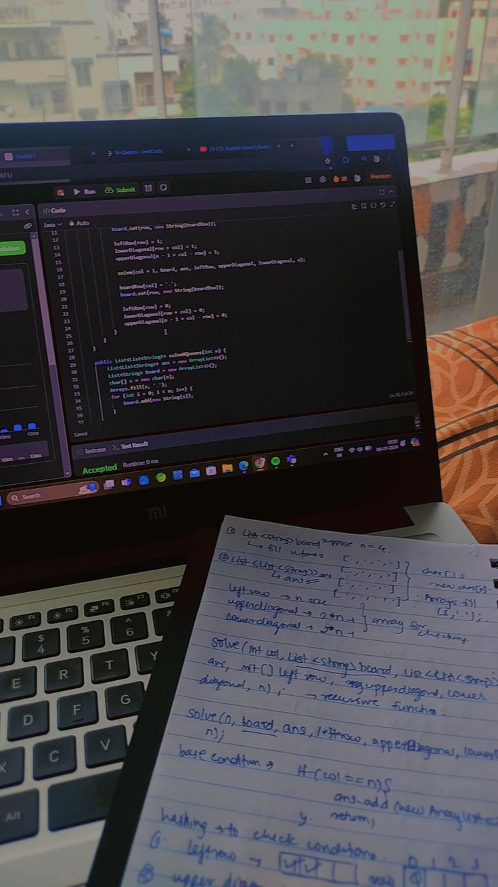

Teknik Informatika
Fokus pada pengembangan software, kecerdasan buatan, dan teknologi komputasi masa depan.
Sistem Informasi
Menggabungkan TI dan bisnis untuk mendukung operasional serta pengambilan keputusan organisasi.

Sistem Komputer
Memadukan pemrograman dan perangkat keras untuk sistem tertanam, jaringan, dan kontrol otomatis.

Manajemen Informatika
Membekali mahasiswa dengan keterampilan mengelola sistem TI dalam konteks bisnis modern.